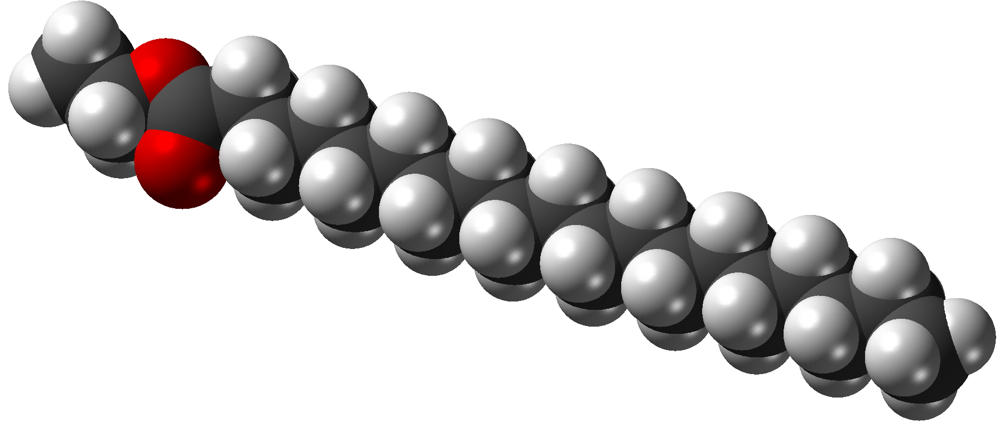

Kemiska formler
Det här med kemsiska formler är en märklig grej. Vi har ett ämne som t.ex. salt. På engelska heter det också salt så därav kan vi ju förstå att det är ett låneord. Det jag försöker säga är att vem som helst skulle förstå vad jag menar om jag säger salt. Varför behöver vi då en kemisk formel för det? Den kemiska formeln för salt är: NaCi. Jag har i alla fall aldrig hört någon säga " kan du skicka NaCi" vid matbordet!
En annan sak vi pratar om i vårat vardagliga liv är ju alkohol. Det kan ju inte vara meningen att man ska säga C2H5OH när vi pratar om alkohol? Nej jag tänkte väl det!
Listan är lång...
På bilden ovan syns en atom for stearinsyra med kemisk formel: C18H36O2. Jag vet vad ett stearinljus är men inte kan det väl vara någon som säger C18H36O2? Jag tycker i alla fall att detta är otroligt onödigt!